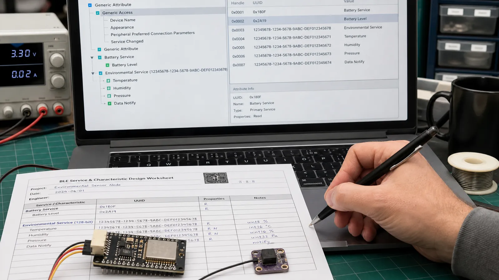

UUID هویت نوع Service، Characteristic یا Descriptor است. UUID کوتاه استاندارد را Bluetooth SIG تخصیص میدهد و برای قابلیت اختصاصی محصول باید از UUID128 تولیدشده و مستند استفاده کنید.
UUID16 در Base UUID بلوتوث جای میگیرد و برای انواع استاندارد کمحجم است. UUID32 کمتر رایج است. UUID128 فضای بزرگی برای شناسه اختصاصی فراهم میکند. نمایش متنی UUID با ترتیب بایت روی هوا یکی نیست؛ هنگام Capture به Endianness دقت کنید.
Battery Service، Device Information، Heart Rate و Environmental Sensing قراردادهای تعریفشده دارند و باعث سازگاری بهتر با ابزارها میشوند. اگر نیاز شما با استاندارد منطبق است همان را استفاده کنید و نوع داده، واحد و بازه را مطابق مشخصات پیادهسازی کنید.
اگر داده یا عملیات محصول در سرویس استاندارد جا نمیگیرد، یک UUID128 تصادفی برای Service و UUIDهای مجزا برای Characteristicها بسازید. UUID را از نام محصول یا عددهای قابل حدس نسازید. جدول UUID، Property، Permission، قالب Value و نسخه پروتکل را در مستند پروژه نگه دارید.
تغییر طول یا معنی Value میتواند برنامه قدیمی را خراب کند. یک Characteristic نسخه پروتکل یا فیلد Version در Payload قرار دهید. برای تغییر ناسازگار، UUID جدید یا نسخه Major جدید تعریف کنید و مدت مشخصی از نسخه قبلی پشتیبانی کنید.
یک UUID128 برای Service بسازید. سپس UUIDهای جدا برای Temperature، Humidity، Sample Interval و Protocol Version تولید کنید. در جدول طراحی مشخص کنید دما int16 با مقیاس 0.01 درجه و ترتیب Little Endian است. این جدول مرجع Firmware و اپلیکیشن خواهد بود.